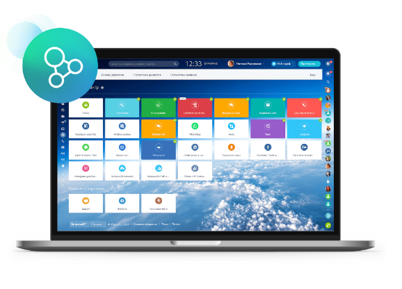

Автоматизация работы в маркетплейсе
Автоматизация работы в маркетплейсе: управление и оптимизация бизнеса с помощью интеграции CRM-систем
В современном мире электронной коммерции маркетплейсы становятся основными площадками для продажи товаров и услуг. Чтобы успешно конкурировать на этом рынке, бизнесам необходимо обеспечить высокий уровень обслуживания клиентов и оптимизировать рабочие процессы. Именно здесь на помощь приходят CRM-системы, такие как #Битрикс24 и АмоCRM. В данной статье мы подробно рассмотрим преимущества интеграции этих систем для автоматизации работы в маркетплейсе.
Системы ФБО и ФБС: эффективное управление заказами и складами
Одним из ключевых преимуществ интеграции CRM-систем с маркетплейсами является возможность эффективного управления заказами и складами. Системы фулфилмент (ФБО и ФБС) позволяют автоматизировать процессы отправки и хранения товаров, сокращая время на обработку заказов и минимизируя затраты на логистику. При этом вы сохраняете полный контроль над состоянием своего товара на разных этапах доставки.
Единый личный кабинет: централизованное управление маркетплейсами

Современные CRM-системы предоставляют возможность работать сразу с несколькими маркетплейсами в одном личном кабинете. Это значительно упрощает управление заказами, позволяет оперативно реагировать на изменения на разных площадках и контролировать выполнение планов по продажам.
Контроль остатков товара: всегда в курсе запасов на складе
Интеграция CRM-системы с маркетплейсом позволяет контролировать остатки товара на складе и своевременно реагировать на изменения. Таким образом, вы сможете поддерживать оптимальный уровень запасов и избегать ситуаций, когда товар заканчивается в самый неподходящий момент.
Синхронизация статусов заказов: актуальная информация о состоянии заказов
CRM-система автоматически синхронизирует статусы заказов между разными маркетплейсами, обеспечивая точную и актуальную информацию о состоянии каждого заказа. Это позволяет предоставлять клиентам своевременные обновления и улучшать общий уровень обслуживания.
Аналитика продаж: принимайте обоснованные решения о развитии бизнеса
Интеграция CRM-системы с маркетплейсом дает вам возможность анализировать продажи в разрезе товаров и площадок. Такая аналитика поможет принимать обоснованные решения о том, на какие товары и площадки стоит уделить больше внимания, а также определить наиболее перспективные направления развития бизнеса.
КЧат-поддержка с покупателями: общение в одном месте
Интеграция CRM-системы позволяет вести диалоги с покупателями в одном месте, что значительно упрощает процесс коммуникации и повышает уровень обслуживания клиентов. Теперь вы сможете быстро отвечать на вопросы и решать возникающие проблемы, без необходимости переключаться между разными платформами.
Аналитика эффективности источников: определите наиболее выгодные каналы привлечения клиентов
CRM-система предоставляет инструменты для анализа эффективности различных источников трафика и конверсии. Теперь вы сможете определить, какие каналы привлечения клиентов работают лучше всего и сосредоточить рекламный бюджет на наиболее эффективных методах.
Массовая работа с этикетками (стикерами): упрощение процесса печати этикеток
Интеграция CRM упрощает процесс печати этикеток для товаров, предоставляя возможность быстро и легко создавать массовые стикеры. Это сокращает время на подготовку отправки заказов и позволяет уделить больше внимания другим важным аспектам бизнеса.
Централизованная работа с упаковкой товаров: единые стандарты качества
Благодаря интеграции с CRM, вы сможете централизованно управлять упаковкой товаров, независимо от того, с какого маркетплейса пришел заказ. Это обеспечивает единые стандарты качества упаковки и снижает вероятность ошибок при отправке товаров.
Заключение: преимущества автоматизации работы в маркетплейсе с интеграцией CRM-систем
Автоматизация работы в маркетплейсе с помощью интеграции CRM-систем, таких как #Битрикс24 и АмоCRM, предоставляет множество преимуществ для вашего бизнеса. Оптимизация процессов, централизация управления, эффективное взаимодействие с клиентами и аналитика продаж – все это делает ваш бизнес более управляемым и успешным.
Не упустите возможность внедрить CRM-систему в свой бизнес и получить все вышеуказанные преимущества. Оптимизация процессов, централизация управления и эффективное взаимодействие с клиентами – вот основные составляющие успеха вашего маркетплейса. Не дайте конкурентам опередить вас – начните автоматизацию работы на маркетплейсе прямо сейчас!